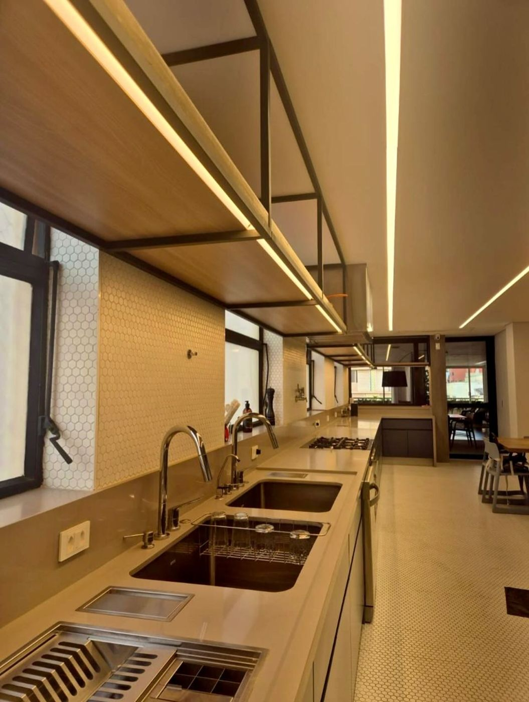
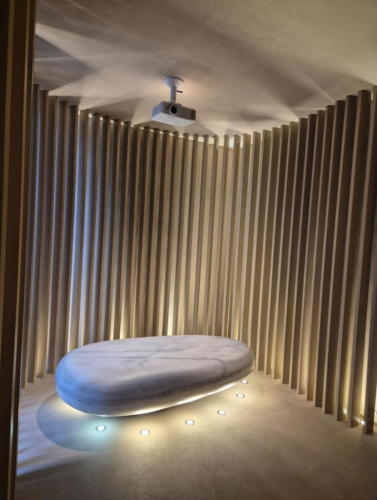
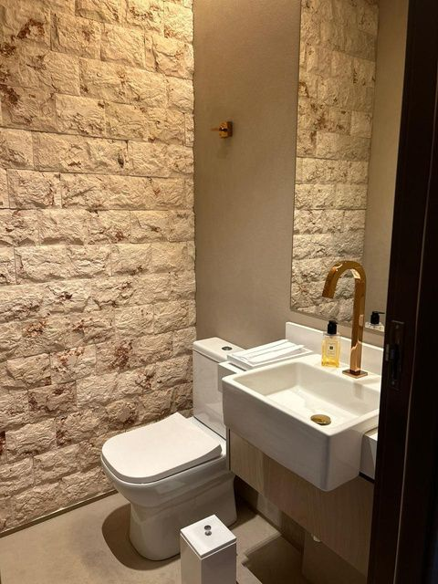
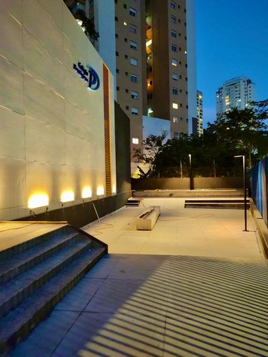
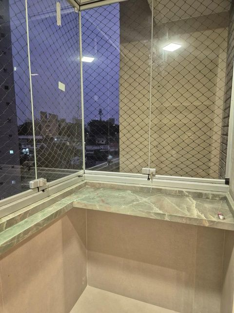
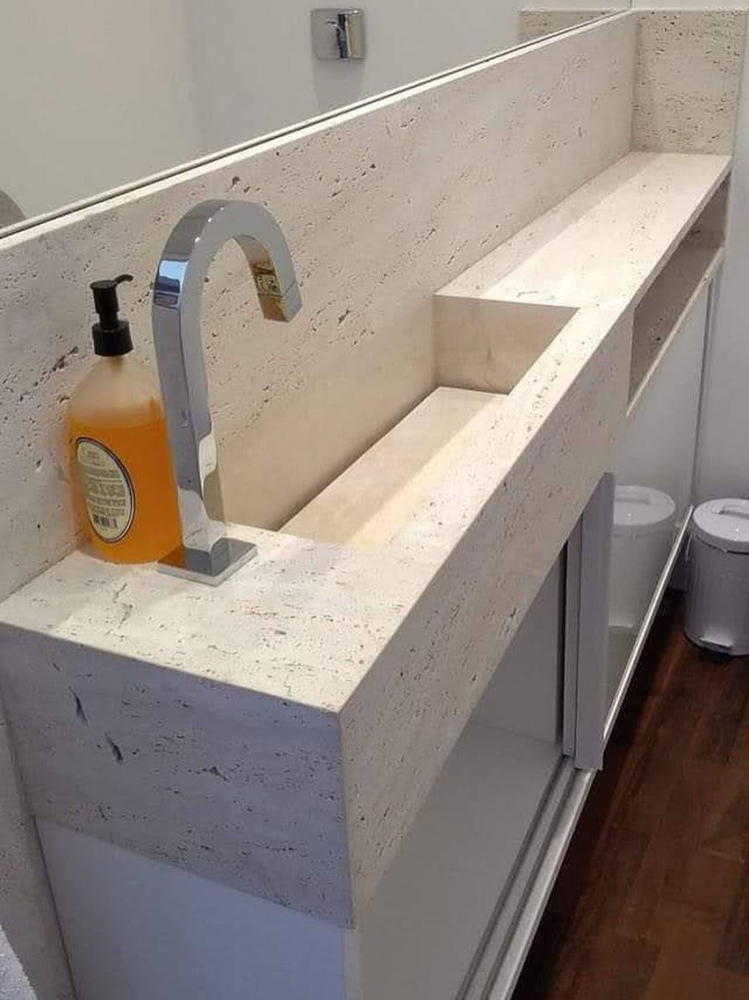
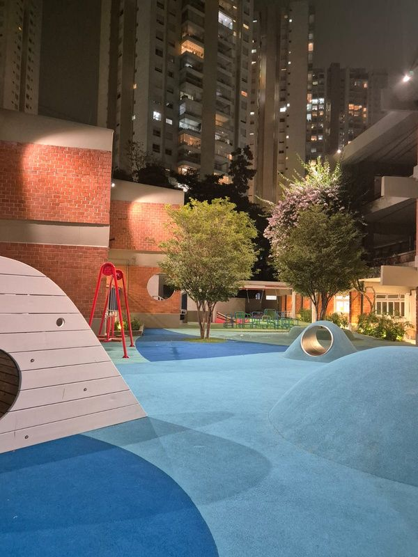

Bancadas de pedra
Cozinhas, banheiros, lavabos e áreas de serviço, com recortes de cuba e acabamento de borda feitos na medida.
AJR Marmoraria, do Grupo AJR
Mármores, granitos, quartzos, quartzitos e lâminas ultracompactas transformados em bancadas, revestimentos, escadas e piscinas. Com equipe própria e a experiência de quem faz obra há mais de 30 anos.

Projetos para
Peças sob medida em pedra natural e superfícies especiais, pensadas para durar e para combinar com o projeto.

Cozinhas, banheiros, lavabos e áreas de serviço, com recortes de cuba e acabamento de borda feitos na medida.

Paredes e ambientes revestidos em pedra, com paginação e acabamento cuidadosos.

Degraus e espelhos em pedra para áreas internas e externas.

Bordas e revestimentos de piscina com pedra própria para área molhada.

Cuba esculpida, bordas retas e nicho no mesmo material. É esse cuidado de acabamento que a AJR leva para cada peça, do lavabo à cozinha inteira.
Qualidade, prazo e resolução de problemas são os três pontos que guiam o nosso trabalho.
Conversar sobre o meu projetoEscolas, hospitais, restaurantes, escritórios e residências de alto padrão em São Paulo e região.

O Grupo AJR é formado pela AJR Marmoraria e pela AJR Construções e Reformas. Quando a sua bancada depende de uma parede nova, de um ponto de água ou de um forro de gesso, não precisa coordenar fornecedores diferentes.
A AJR nasceu na construção, pelas mãos de Alberto Rodrigues. Da experiência na execução de obras veio a especialização em pedras naturais e superfícies especiais, e assim nasceu a AJR Marmoraria.
“Com a vontade e alegria de ver seus clientes realizados, com seus sonhos entregues com a maior qualidade.”
Conte o que você precisa e a gente continua a conversa pelo WhatsApp. Se tiver projeto, medidas ou fotos do ambiente, pode mandar na conversa.
Mármores, granitos, quartzos, quartzitos e lâminas ultracompactas.
Sim. O Grupo AJR atende projetos residenciais, comerciais e corporativos de todos os portes, como o Colégio Pentágono, o hospital veterinário 4Cats e o escritório QNCO.
As duas coisas. O Grupo AJR reúne a AJR Marmoraria e a AJR Construções e Reformas, que executa construção, reformas, elétrica, hidráulica, gesso, ar-condicionado e acabamentos.
Sim. A AJR trabalha com equipe própria e profissionais qualificados, com acompanhamento de cada etapa até a entrega final.
Rua Genaro de Carvalho, 490, São Paulo/SP, CEP 04377-220.